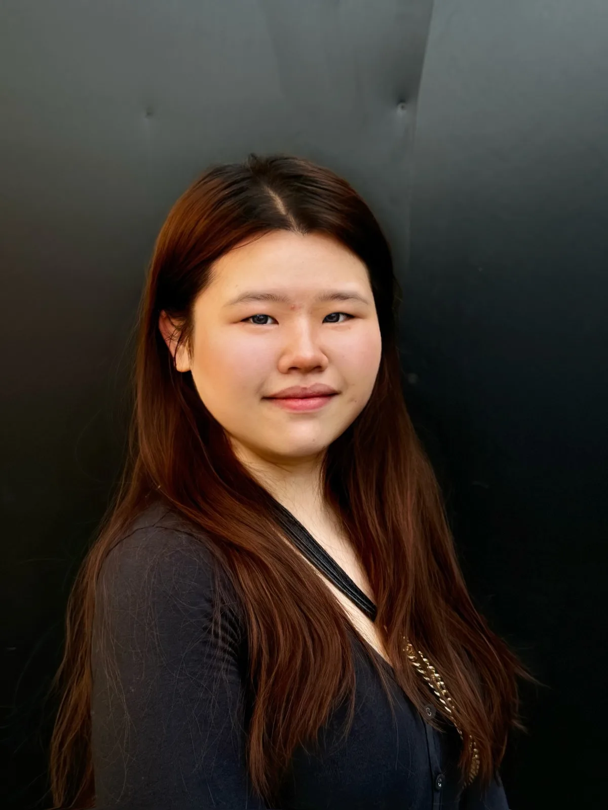
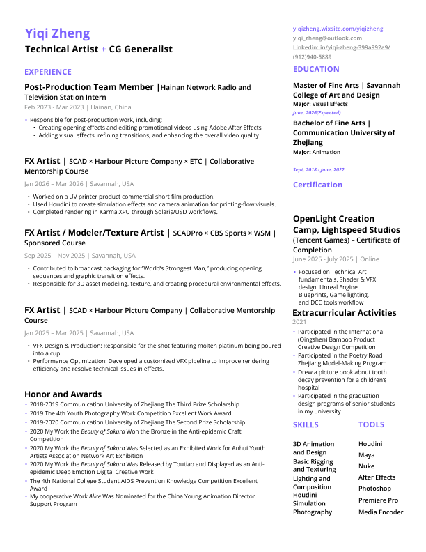

YIQI ZHENG
关于我
我是 Yiqi Zheng，你也可以叫我 Joy。我觉得成为 3D 艺术家是一条令人兴奋的职涯道路。作为技术美术与 CG 通才，我能够搭建制作流程、创造出色的视觉效果，并把创意化为现实。凭著热情与投入，我相信自己能在这个领域有所成就。


我是 Yiqi Zheng，你也可以叫我 Joy。我觉得成为 3D 艺术家是一条令人兴奋的职涯道路。作为技术美术与 CG 通才，我能够搭建制作流程、创造出色的视觉效果，并把创意化为现实。凭著热情与投入，我相信自己能在这个领域有所成就。

